经常会遇到需要鉴定的样本是DLL的情况，或者白利用样本，核心逻辑都封装在DLL里面，想要监控行为，我们就需要各种运行DLL的方式，顺便记录DLL的编写规则。
DLL的编写
- 一个DLL的功能往往就是提供常用的函数，方便在EXE中使用，同时提高代码的可阅读性。所以，一个DLL最重要的部分就是导出函数
RunDll32.exe
为了后面的讲解，首先介绍第一个姿势，
RunDll32.exe执行导出函数rundll32.exe是系统自带的一个应用程序，从名字就可以知道，作用就是运行一个dll，通过命令行参数，我们简单的了解一下这个程序。1
rundll32 <DllName>,<FunctionName>| [Arguments]...
这是我根据MSDN上的图写出来的命令行介绍，因为这个系统程序莫名奇妙居然不可以使用
--help命令获取帮助，也不能使用/?获取命令详情，白给。。。
首先，rundll32，这是在system32下面的windows应用程序，然后[space]输入dll的名称，当然如果当前命令行不在对应目录需要切换目录或者输入绝对路径，最后是需要执行的函数和对应的参数，参数可选，而且用[space]隔开。
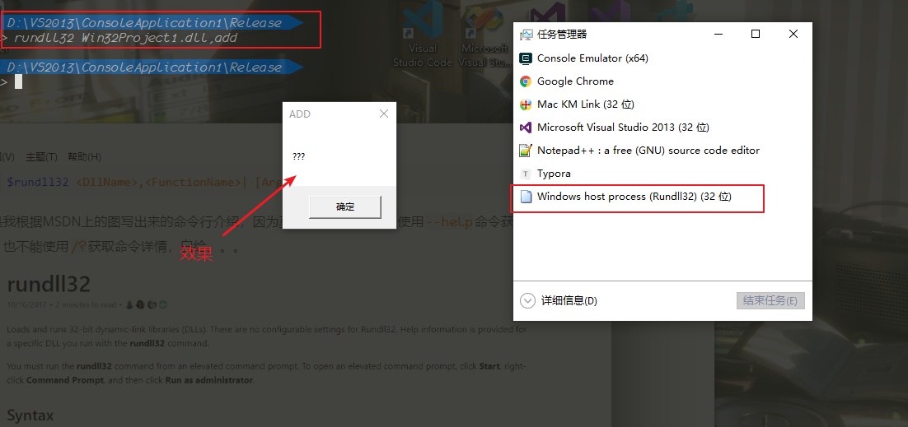
准备工作
首先，创建
DLL程序必须选择动态链接库程序。原因倒是没什么，因为VS会设定好很多参数。。其中最重要的就是dllmain这个页面的默认生成。1
2
3
4
5
6
7
8
9
10
11
12
13
14
15
16
17
18// dllmain.cpp : 定义 DLL 应用程序的入口点。
BOOL APIENTRY DllMain( HMODULE hModule,
DWORD ul_reason_for_call,
LPVOID lpReserved
)
{
switch (ul_reason_for_call)
{
case DLL_PROCESS_ATTACH:
case DLL_THREAD_ATTACH:
case DLL_THREAD_DETACH:
case DLL_PROCESS_DETACH:
break;
}
return TRUE;
}
这个界面很简单，但是没有
main函数那么有用，main函数决定了一个程序的运行逻辑，但是dllmain不同，他只决定这个dll被加载，或者被卸载的时候，执行什么动作，而导出函数与dllmain没有任何关系，可以在载入的时候调用，也可以不调用。首先，我们在
DLL_PROCESS_ATTACH，下面调用一个MessageBox或者printf，开始我们的编程之旅，都说了嘛，千行代码始于HelloWord！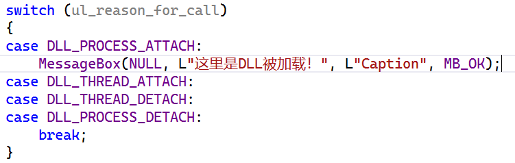
接下来，就算我们输入的是
1
rundll32 <DllName>.dll
不执行任何函数都会弹出刚才的窗口，因为我们代码是在dll被加载的时候就执行了的。
就像这样
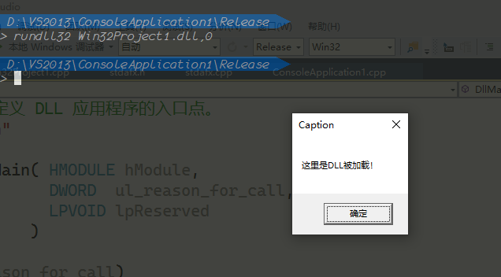
但是不得不说，这还有一个BUG，如果后面不接上参数0的话，DLL就不会被加载。。。
导出函数的编写
导出函数也有几点需要注意，首先是需要定义导出函数的调用约定，通常情况是
cdcall，但是也可以采用stdcall或者fscall。第二就是导出函数的方式，如果是使用
C++的方式导出函数，那么你会遭遇名称粉碎，这也是C++函数重载的本质。。。所以我们这样编写一个导出函数：
1
2
3
4extern "C" __declspec(dllexport) void add()
{
::MessageBox(NULL, L"???", L"ADD", MB_OK);
}extern "c"表示该函数使用C的语法编译，防止编译器给我们名称粉碎。__declspec(dllexport)这个就不用解释了好吧，告诉编译器，这个函数是我们的导出函数。- 接下来就是一个正常函数的编写。
我写多几个，都差不多的弹窗
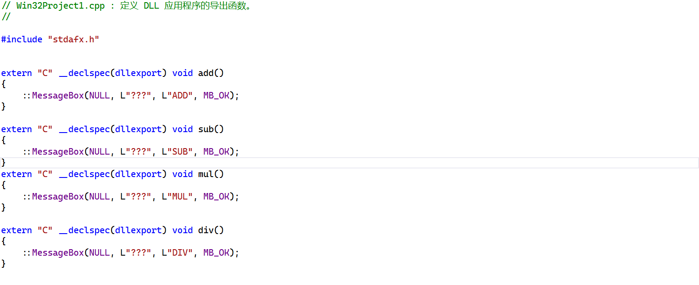
dll的运行
- 每个程序想要使用dll，分为
显式调用和隐式调用两种，然后又存在dll的调用路径等，一系列问题的积累。所以，这里我们只使用LoadLibrary加载DLL，然后使用GetProcAddress获取导出函数地址来执行这个函数，以及使用多线程直接运行多个导出函数。
LoadLibrary
首先我们使用绝对路径直接加载DLL，没有必要使用相对路径。算来算去太复杂了。。。
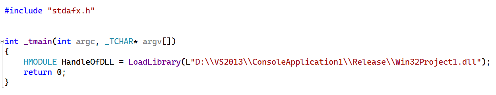
要记得一件事情，C里面，所有的指针，句柄，全部都是内存中的地址。同样的，这里返回的
HMODULE也就是DLL被加载到内存中的入口地址，在DeBug模式下编译，然后使用调试器可以看的更清楚。(Release模式下编译之后代码都被优化没了的憨憨在此！！!)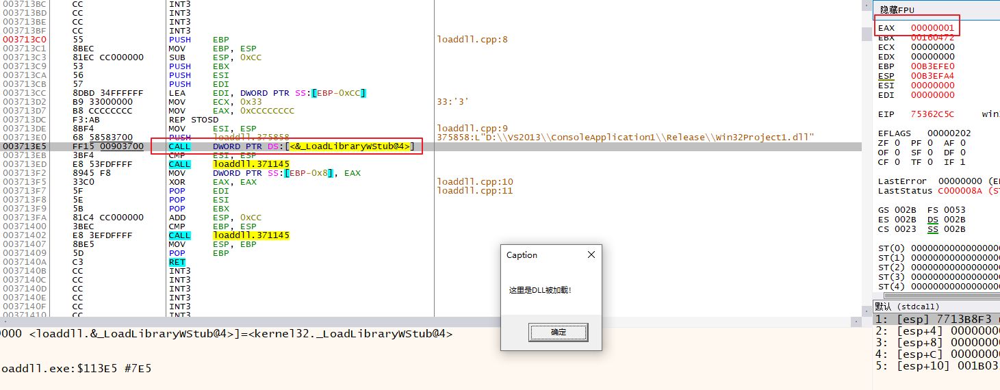
可以看到，首先是
dllmain中被加载的代码执行。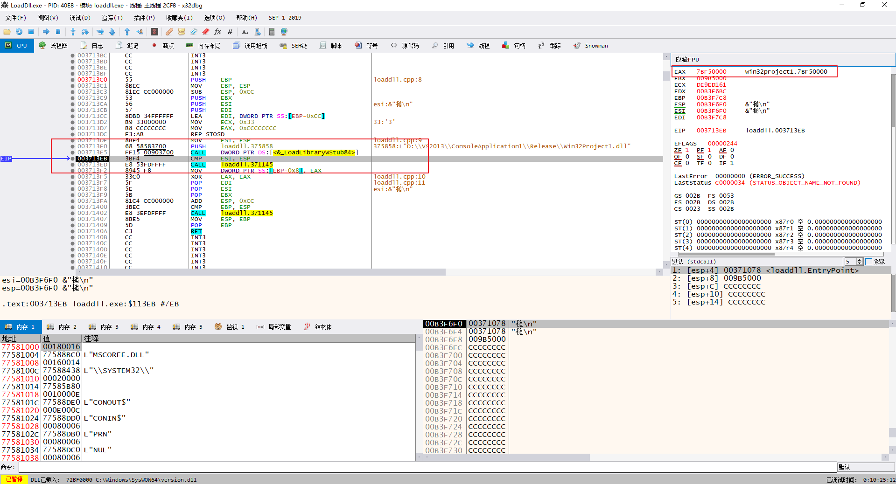
在执行完之后，DLL的地址被返回到EAX中，可以观察内存布局或者查看对应的内存空间，就可以看到我们刚刚编写的DLL
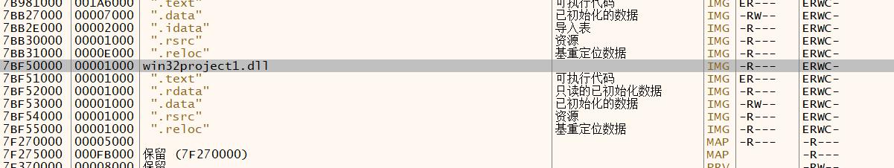
内存空间也可以看到
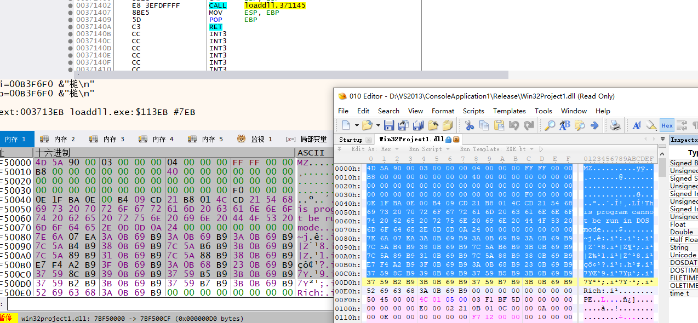
接下来，我们获取对应的函数地址。
GetProcAddress
GetProcAddress(<模块句柄>，<函数名称>)使用很简单，但是要执政这个函数，我们总不能使用内联汇编直接写
Jmp吧，所以我们还需要使用函数指针，强制转换这个地址位我们的一个定义好的函数。1
typedef void(*fun)();
接下来一套强制转换的熟练操作即可。
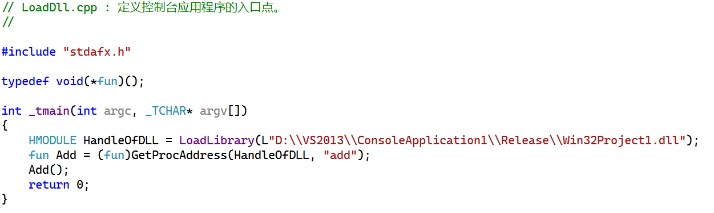
同样的，我们使用调试器来查看结果，顺便我们这次采用Release来编译。
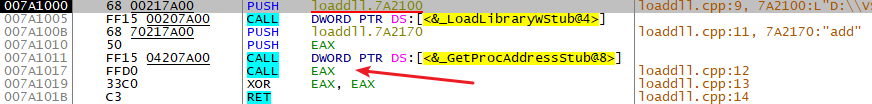
这代码不愧只有
7kb啊，核心代码就7行，获取函数地址之后，直接Call过去就完事儿，我们顺便看看对应地址究竟是什么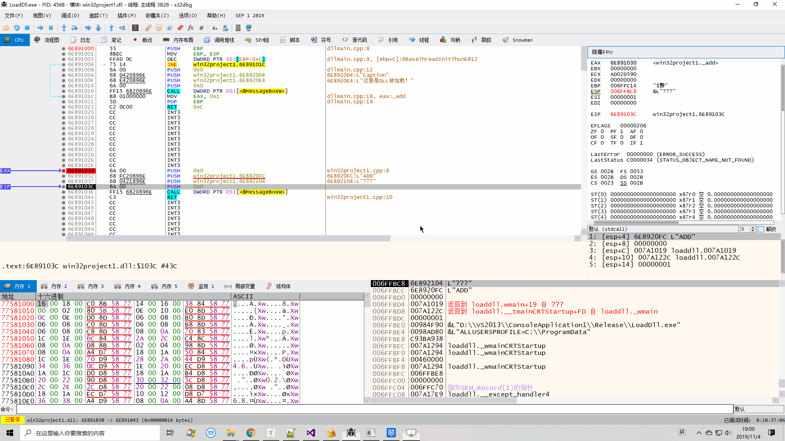
代码
1 |
|
同时运行多个导出函数
手动实现GetProcAddress
没办法呀，当我们拿到一个未知的DLL的时候，我们肯定是不知道导出函数的名称的，总不能给程序内嵌一个
PEiD吧。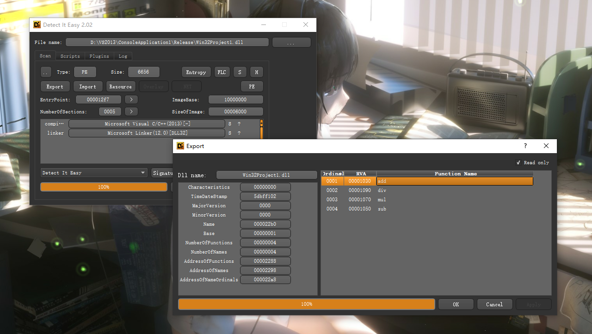
所以我们需要简单的实现一下
GetProcAddress的功能，回顾一下PE结构的知识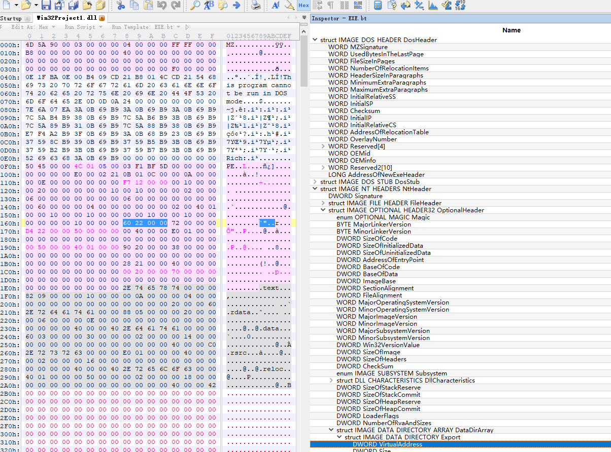
首先把目标展示出来，我们要获取的是
NtHeader下面的OptionalHeader中的结构体DataDirectory数组中的第一个Export所以首先找到
NtHeader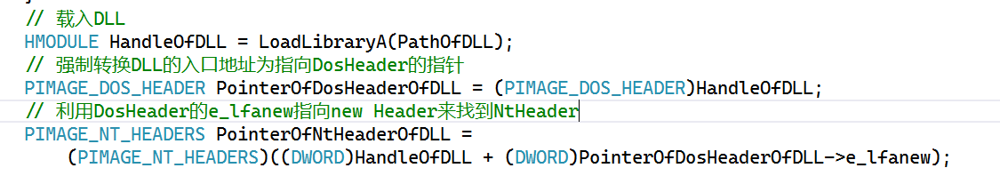
接下来，我们从
NtHeader一路找到导出表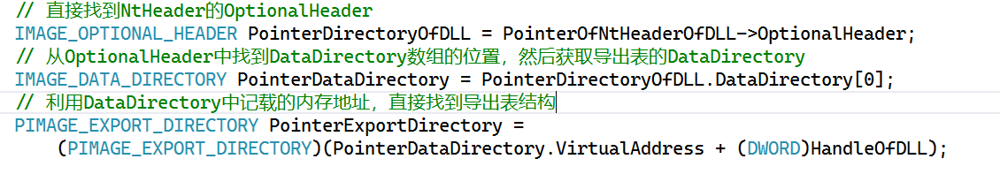
以前遍历导出表，都需要遍历三个表，现在我们硬气了！就只遍历一个！
1
for (DWORD i = 0; i < PointerExportDirectory->NumberOfFunctions; i++)
这样我们直接拿到导出函数的内存地址，我们不在意也不关注啊对应的函数名称是什么，直接创建线程执行。
多线程-WaitForMultipleObjects
要不怎么说我是个憨憨呢，代码写好了，就是不干活。。。我哪知道就算多线程创建好了，也需要在代码中停下来
Sleep，否则就算创建了线程，却因为CPU没来的及执行就return了，导致线程夭折。这里我们使用正规一点的方法来等待线程结束，
WaitForMultipleObjects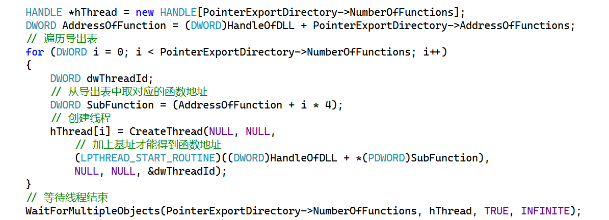
大功告成~

偷懒
- 完成这个程序之后，最大的好处就是遇到可疑的DLL，或者难以分析的DLL，直接运行起来，然后捕捉行为，这可比阅读汇编容易多了~